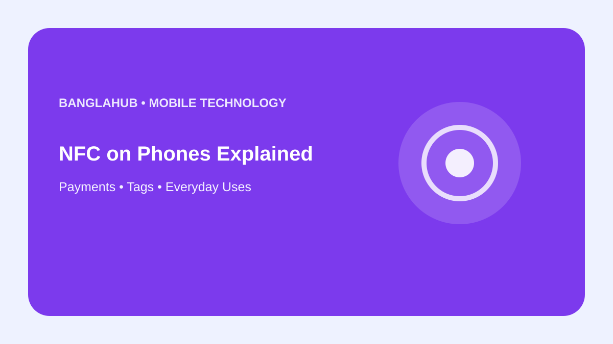

MOBILE TECHNOLOGY
NFC on Phones Explained: Payments, Tags and Everyday Uses

Near Field Communication, or NFC, lets compatible devices exchange information over a very short distance. It is commonly used for contactless payments, tags and accessories.
NFC support depends on the exact phone model, software, service and region, so check official documentation before relying on a feature.
What NFC does
NFC provides short-range communication for deliberate tap-based interactions. It is different from Wi-Fi and Bluetooth and is designed for a much shorter range.
Contactless payments
Many compatible phones can use NFC for supported payment services. Availability depends on the phone, payment provider, region and bank.
NFC tags
Small tags can store simple information or trigger supported actions. Treat unknown tags carefully if they open websites or request sensitive information.
Troubleshooting NFC
Check whether NFC is enabled, keep devices close and verify that the relevant service is configured. For payment problems, also check the payment provider or bank.
FAQ
Does every phone have NFC?
No. Support varies by model and market.
Is NFC the same as Bluetooth?
No. They are different wireless technologies with different ranges and uses.
Bottom line: NFC is useful for close-range actions, but device and service support should always be checked.
Editorial note: Features and availability vary by phone model, software and region.